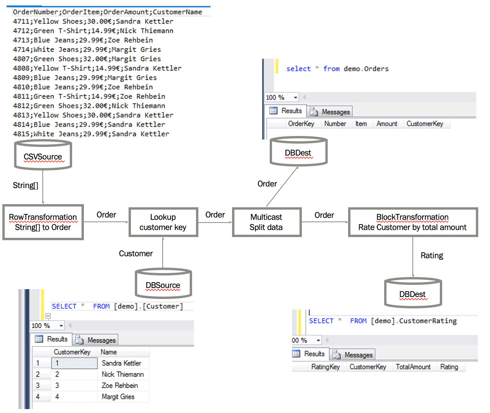

Example: Complex Data Flow
Purpose
This example demonstrates how the different data flow components can be used together, simulating a real-life scenario.
In this scenario, we want to read some orders from a csv file, transform them into an Orders object and lookup the customer key for the customer name from a customer table. Subsequently, we want to do 2 things: Write the orders into an orders table and store a customer rating based on the total amount of purchases in a customer_rating table.
Schematic overview

Preqrequisites
In order to recreate this demo, you need an empty database. This example will run on any supported database - though every database comes with some database specific particularities. The following code was optimized for Sql Server.
You need an empty database and a connection string to connect with this database.
Preparation
We need to create the destination table orders and customer_rating as empty table. Also
we want a customer table that hold a customer key for our customer names.
We could do this manually, or we can use the following ControlFlow Tasks to create these tables:
ControlFlow.DefaultDbConnection = new SqlConnectionManager("Data Source=.;Initial Catalog=demo;Integrated Security=false;User=sa;password=reallyStrongPwd123");
TableDefinition OrderDataTableDef = new TableDefinition("orders",
new List<TableColumn>() {
new TableColumn("OrderKey", "int",allowNulls: false, isPrimaryKey:true, isIdentity:true),
new TableColumn("Number","nvarchar(100)", allowNulls: false),
new TableColumn("Item","nvarchar(200)", allowNulls: false),
new TableColumn("Amount","money", allowNulls: false),
new TableColumn("CustomerKey","int", allowNulls: false)
});
TableDefinition CustomerTableDef = new TableDefinition("customer",
new List<TableColumn>() {
new TableColumn("CustomerKey", "int",allowNulls: false, isPrimaryKey:true, isIdentity:true),
new TableColumn("Name","nvarchar(200)", allowNulls: false),
});
TableDefinition CustomerRatingTableDef = new TableDefinition("customer_rating",
new List<TableColumn>() {
new TableColumn("RatingKey", "int",allowNulls: false, isPrimaryKey:true, isIdentity:true),
new TableColumn("CustomerKey", "int",allowNulls: false),
new TableColumn("TotalAmount","decimal(10,2)", allowNulls: false),
new TableColumn("Rating","nvarchar(3)", allowNulls: false)
});
OrderDataTableDef.CreateTable();
CustomerTableDef.CreateTable();
CustomerRatingTableDef.CreateTable();
SqlTask.ExecuteNonQuery("Fill customer table", "INSERT INTO customer values('Sandra Kettler')");
SqlTask.ExecuteNonQuery("Fill customer table", "INSERT INTO customer values('Nick Thiemann')");
SqlTask.ExecuteNonQuery("Fill customer table", "INSERT INTO customer values('Zoe Rehbein')");
SqlTask.ExecuteNonQuery("Fill customer table", "INSERT INTO customer values('Margit Gries')");
Let's define some POCOs (Plain old component objects) that can hold the data when it goes through the data flow pipeline.
public class Order
{
public string Number { get; set; }
public string Item { get; set; }
public decimal Amount { get; set; }
public int CustomerKey { get; set; }
public string CustomerName { get; set; }
}
public class Customer
{
public int CustomerKey { get; set; }
[ColumnMap("Name")]
public string CustomerName { get; set; }
}
public class Rating
{
public int CustomerKey { get; set; }
public decimal TotalAmount { get; set; }
[ColumnMap("Rating")]
public string RatingValue { get; set; }
}
Not the ColumnMap attribute above the properties CustomerName and RatingValue. These attributes will
map the table columns Name in the customer table and the column Rating in the customer_rating table with
corresponding property. Normally, ETLBox maps columns and properties by the same name - unless the ColumnMap attribute
is there.
Build the pipeline
Now we can construct a pipeline. Let's start with the source
//Read data from csv file
CsvSource<string[]> sourceOrderData = new CsvSource<string[]>("DemoData.csv");
sourceOrderData.Configuration.Delimiter = ";";
Source data will look like this:
OrderNumber;OrderItem;OrderAmount;CustomerName
4711;Yellow Shoes;30.00$;Sandra Kettler
4712;Green T-Shirt;14.99$;Nick Thiemann
4713;Blue Jeans;29.99$;Zoe Rehbein
4714;White Jeans;29.99$;Margit Gries
4807;Green Shoes;32.00$;Margit Gries
We add a row transformation - and connect it with source. Data will be read from the source and moved into the row transformation. A row transformation will go through each row and modifies it by a given function. Furthermore, a row transformation can change the object type of the input into something different - we use this to transform our string array into our POCO.
//Transform into Order object
RowTransformation<string[], Order> transIntoObject = new RowTransformation<string[], Order>(CSVIntoObject);
private Order CSVIntoObject(string[] csvLine) {
return new Order() {
Number = csvLine[0],
Item = csvLine[1],
Amount = decimal.Parse(csvLine[2].Substring(0, csvLine[2].Length - 1), CultureInfo.GetCultureInfo("en-US")),
CustomerName = csvLine[3]
};
}
//Link the components
sourceOrderData.LinkTo(transIntoObject);
No we define another source from the database - the customer table we need this for our lookup. A lookup will use a third source to enrich the data in the flow, in our case to retrieve a customer key from the customer name.
//Find corresponding customer id if customer exists in Customer table
DbSource<Customer> sourceCustomerData = new DbSource<Customer>("customer");
LookupCustomerKey lookupCustKeyClass = new LookupCustomerKey();
Lookup<Order, Order, Customer> lookupCustomerKey = new Lookup<Order, Order, Customer>(
lookupCustKeyClass.FindKey, sourceCustomerData, lookupCustKeyClass.LookupData);
public class LookupCustomerKey
{
public List<Customer> LookupData { get; set; } = new List<Customer>();
public Order FindKey(Order orderRow)
{
var customer = LookupData.Where(cust => cust.CustomerName == orderRow.CustomerName).FirstOrDefault();
orderRow.CustomerKey = customer?.CustomerKey ?? 0;
return orderRow;
}
}
transIntoObject.LinkTo(lookupCustomerKey);
Now we add a multicast - a multicast "double" the input into 2 same outputs with the exact same data. This is useful if you want to have additional destination populated with data based on your input. In our scenario we need this to because we do not only want to store the orders in a order table, but also we want to create some customer rating based on the orders.
//Split data
Multicast<Order> multiCast = new Multicast<Order>();
lookupCustomerKey.LinkTo(multiCast);
As mentioned before, one output of the multicast will end up in a database destination.
//Store Order in Orders table
DbDestination<Order> destOrderTable = new DbDestination<Order>("orders");
multiCast.LinkTo(destOrderTable);
The other output will go into a block transformation. A Block Transformation is a blocking pipeline element - it will wait until all input data arrived at the block transformation. Then it will apply the given function on all items in the element. When done, it will continue to hand over the data to the next element in the pipeline. Our code will calculate a rating "A" or "F" based on the total amount of orders - if the total amount is higher than 50, it will be an "A", otherwise "F".
//Create rating for existing customers based total of order amount
BlockTransformation<Order,Rating> blockOrders = new BlockTransformation<Order,Rating>(BlockTransformOrders);
multiCast.LinkTo(blockOrders);
private List<Rating> BlockTransformOrders(List<Order> allOrders) {
List<int> allCustomerKeys = allOrders.Select(ord => ord.CustomerKey).Distinct().ToList();
List<Rating> result = new List<Rating>();
foreach (int custKey in allCustomerKeys) {
Rating newRating = new Rating();
newRating.CustomerKey = custKey;
newRating.TotalAmount = allOrders.Where(ord => ord.CustomerKey == custKey).Sum(ord => ord.Amount);
newRating.RatingValue = newRating.TotalAmount > 50 ? "A" : "F";
result.Add(newRating);
}
return result;
}
Now we want to store the calculated Rating in the table customer_rating. So we create another destination
for this table and link it to our BlockTransformation.
DbDestination<Rating> destRating = new DbDestination<Rating>("customer_rating");
blockOrders.LinkTo(destRating);
No we are all set.
To have data read from the source, we need to start the data flow.
All sources need to be started with the Execute() or ExecuteAsync() method,
and then we can use the Wait() or Completion() method to wait until all destinations
got all data and the completion message from the source.
The easiest way is to call the execution synchronous:
//Execute the data flow synchronous
sourceOrderData.Execute();
destOrderTable.Wait();
destRating.Wait();